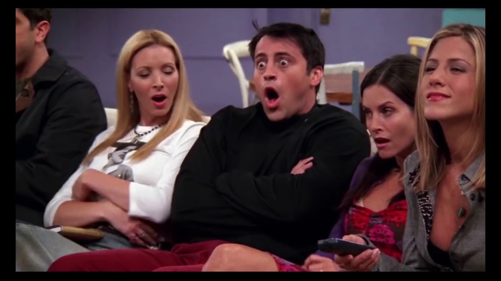

Na oitava temporada, confirma-se que Rachel está grávida,
e um após o outro,
vão descobrindo que o pai é na verdade Ross. Ao continuarem
morando juntos, Joey começa a se apaixonar por Rachel.
Percebendo que Ross não está exercendo seus deveres parentais,
Joey, ainda que relutante, convence Rachel a mudar-se para o
apartamento do pai da criança que está esperando, e assim ela faz.
No último episódio da temporada, ela dá a luz a uma menina que
ainda não tinha nome. Quando Rachel pede para Monica falar os
nomes escolhidos para seus futuros filhos, Rachel adora o nome
feminino escolhido por Monica. Monica então permite que Rachel
dê o nome à sua filha recém-nascida, que então passa a se chamar
Emma.
Melhores episódios:
- "Aquele do Suéter Vermelho" (08x02)
- "Aquele com o Videotape" (08x04)
- "Aquele do Boato" (08x09)
- "Aquele com o Chá de Bebê" (08x20)
- "Aquele em que Rachel Está Atrasada" (08x22)
